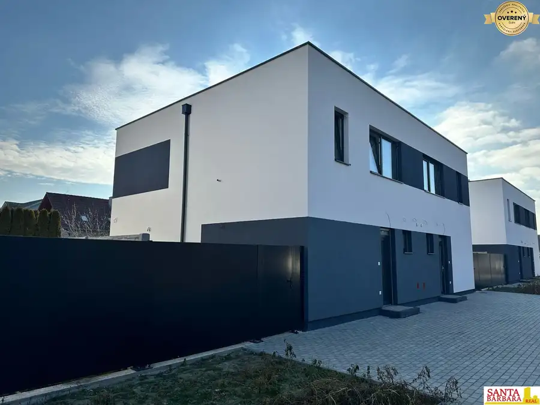
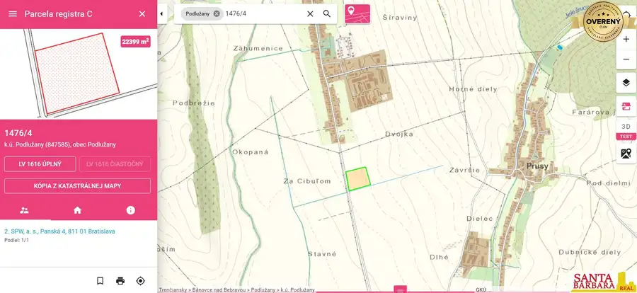
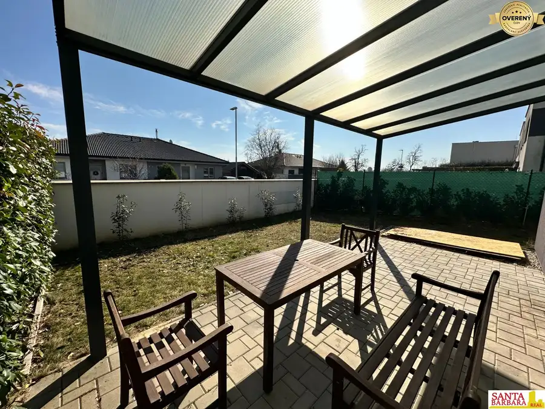

Na predaj exkluzívny stavebný pozemok v Borinke – na skok od Stupavy
Borinka
- Plocha1000 m²
O nehnuteľnosti
Ponúkame Vám jedinečný stavebný pozemok o výmere 1 000 m² na začiatku obľúbenej obce Borinka, len pár minút od Stupavy. Tento rovinatý pozemok sa nachádza na okraji lesa, čo zaručuje súkromie, pokoj a krásne prírodné prostredie.
Základné informácie:
Výmera: 1 000 m²
Územie: obytná zóna – možnosť výstavby rodinného domu na trvalé bývanie
Inžinierske siete: kompletne privedené
Prístup: nová súkromná cesta
Pozemok je pripravený na okamžitú výstavbu
Momentálne je na pozemku navrhnutý projekt rodinného domu s dvoma bytovými jednotkami, no dispozíciu je možné upraviť podľa vlastných predstáv – napríklad na priestranný samostatne stojaci rodinný dom.
Tento pozemok je ideálny pre ľudí, ktorí hľadajú pokojné bývanie v blízkosti prírody, no s výbornou dostupnosťou do mesta.
Neváhajte nás kontaktovať pre viac informácií alebo dohodnutie obhliadky.
Parametre
| Rozloha pozemku | 1000 m² |
|---|---|
| Dátum zverejnenia | 24. 7. 2025 |
Kde to je
Mohlo by Vás zaujímať

Rodinné domy10 299 000 €Rovinka - novostavba na skok do mesta Rovinka 106 m² RODINNÝ DOM: je 4-izbový v poschodovom dvojdome so záhradou terasou a parkovacími miestami, predáva sa vo vyhotovení holodom. Rozloha domu je 106m2,…
Pozemok2 783 965 €Na predaj stavebný pozemok so schváleným investičným zámerom Bánovce nad Bebravou 22399 m² Pozemok na predaj aj so schváleným investičným zámerom. Pozemok sa nachádza v obci Podlužany pri meste Bánovce nad Bebravou. Lokalita má výbornú…
BytRezervované10 238 000 €Na predaj 3-izbový byt s predzáhradkou v Bernolákove Bernolákovo 3-izbový84 m² Ponúkame na predaj priestranný 3-izbový byt s predzáhradkou, nachádzajúci sa na prízemí rodinného dvojdomu na Pšeničnej ulici v Bernolákove. ✅…